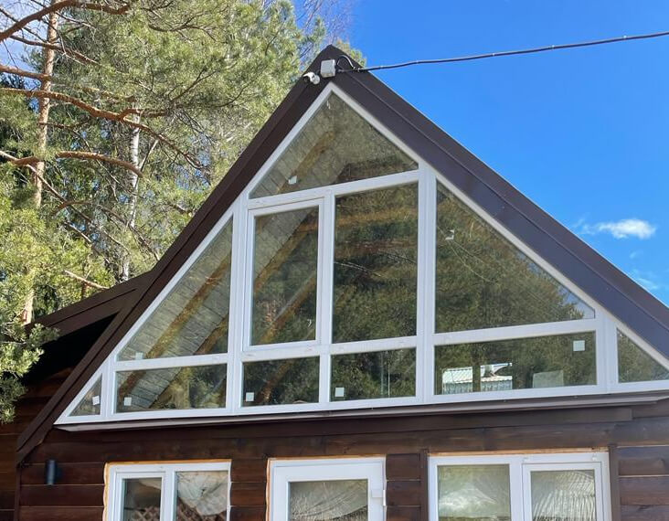
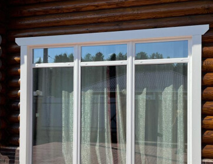
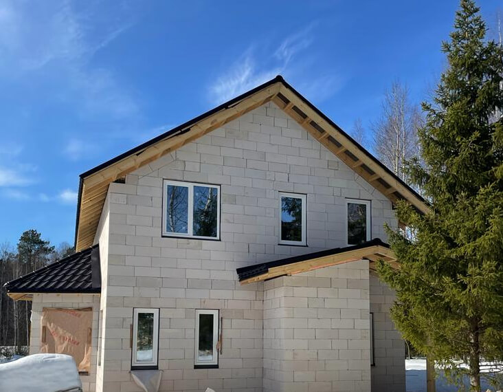

Изготовление, доставка и монтаж любых оконных конструкций
по фиксированной стоимости с гарантией сроков
вызвать замерщика
-5%
Скидка на ремонт
окон
окон
-10%
Скидка при остеклнении
коттеджа
коттеджа
-15%
Скидка при
самовывозе со склада
самовывозе со склада
Калькулятор окон
Выберите, куда нужны окна
Квартира
Офис
Частный дом
ДАЛЕЕ
Выберите количество створок
одна
две

три
Назад
ДАЛЕЕ
Укажите размеры окна
Если вам не нужны аксессуары, снимите галочки. Укажите требуемый тип откосов. Вы можете добавить подоконник, откос и отлив.
Ширина:
Высота:
Выберите аксессуары
Назад
Далее
Выберите тип открытия створки
Если необходимо — добавьте на створку москитную сетку и детский замок. Отметьте нужные опции галочками
Назад
Далее
Окно добавлено к расчету
Добавьте еще одно пластиковое окно или перейдите к следующему шагу.
{{ option.vert_size }} x {{ option.horiz_size }}
Редактировать
Дублировать
Назад
Далее
Выберите дополнительные услуги
Доставка
Подъём на этаж
Монтаж
Назад
Далее
Поздравляем! Всё готово для расчета.

Окно {{itemIndex}}
{{item.vert_size}}x{{item.horiz_size}} см, количество створок - {{item.count_all}}
Доп. опции:
Аксессуары:
Доп. опции:
Аксессуары:
Ваш расчет
{{orderNumber}}
По вашему запросу возможны несколько вариантов.
Консультант перезвонит для уточнения деталей.
Рассчитать стоимость
Спасибо! Ваша заявка отправлена.
Назад
Мы предлагаем
Окна ПВХ
Деревянные окна
Алюминиевые окна
Окна
На сегодняшний день пластиковые окна являются самым востребованным решением, которое для большинства покупателей является оптимальным по соотношению "цена/качество". Чем обусловлена такая популярность?
Преимущества пластиковых окон
Эстетичность пластиковых окон и различные варианты их исполнения позволяют подобрать оптимальный вариант для любого дизайна помещений и фасадов.
Безопасность пластиковых окон давно не вызывает сомнения, используемые при изготовлении материалы безвредны для окружающей среды и людей.
Герметичная конструкция позволяет защитить помещение от сквозняков, теплопотерь и посторонних шумов с улицы.
Для ухода за окнами ПВХ не требуется много времени и дополнительных средств, а рамы не нуждаются в регулярной покраске.
Окна ПВХ выделяются своей долговечностью и неприхотливостью. При сроке службы в несколько десятков лет окна не подвержены влиянию атмосферных явлений, не теряют внешний вид и целостность. Максимум - потребуется замена уплотнителей или регулировка фурнитуры.
По стоимости окна ПВХ выгодно отличаются от окон из других материалов, обладая, при этом, массой полезных характеристик.
Характеристики окон ПВХ
Исполнение пластиковых окон может зависеть от ряда параметров, продиктованных пожеланием заказчика, техническими параметрами и другими условиями.
1
Размер и количество створок - выбор зависит от личных предпочтений, размеров оконного проема и параметров помещения.
2
Вариант открывания створок - глухое окно, поворотные створки, поворотно-откидные створки или же комбинированные варианты (например, глухая створка и поворотная).
3
Конструкция профиля - количество камер и их компоновка, наличие армирующего профиля. Влияет на "теплоту" окон, их прочность.
4
Разновидность стеклопакета - одно-, двух-, трехкамерные и т. д. Имеет значение как с точки зрения поддержания температуры в помещении, так и с точки зрения уровня шумоизоляции.
5
Геометрическая форма - пластиковые окна могут быть как классической прямоугольной или квадратной формы, так и закругленные для круглых, полукруглых окон и арок.
6
Цвет и декор - ПВХ окна доступны не только в классическом белом варианте, профиль может быть изготовлен практически любого цвета, в том числе - с декоративной текстурой.
Деревянные окна
Деревянные окна приобретают все большую популярность за счет их экологичности, эстетичности и прекрасных эксплуатационных свойств, которые не уступают характеристикам окон из других современных материалов.
Преимущества окон из дерева
Натуральный, экологически чистый и безопасный материал привлекает внимание тех, кто заботится об окружающей среде и здоровой атмосфере собственного дома.
Хорошая шумоизоляция делает деревянные окна отличным выбором даже для крупных городов с оживленным транспортным движением. Нужно только подобрать вариант с качественным стеклопакетом.
Эстетичность современных деревянных окон находит свое применение в оформлении как загородных домов, так и современных квартир.
Как показывает практика, деревянные окна обладают самыми лучшими теплоизоляционными свойствами в сравнении с окнами из других материалов, да и рамы даже в морозы остаются теплыми на ощупь. Однако, важна правильная установка, которая позволит исключить образование конденсата.
При нагревании и горении даже обработанное пропитками дерево не выделяет ядовитые соединения.
Разнообразие лакокрасочных покрытий и пропиток позволяет создать оптимальный по цвету вариант, а возможность использовать фурнитуру из любых материалов неограниченно расширяет простор для дизайнерской фантазии.
Деревянные рамы способствуют естественному воздухообмену в помещении из-за пористости самой древесины. Неплотные защитные покрытия рам не препятствуют этому процессу.
Окна из дерева хорошо переносят резкие перепады температур и не боятся сильных холодов и жары.
Характеристики деревянных окон
Основными материалами для деревянных окон выступают сосна и дуб, реже - лиственница и красное дерево, так как стоят дороже. Сами окна можно разделить на полностью "деревянные" и дерево-алюминиевые, которые сочетаются с различными стеклопакетами.
1
Окна из клееного бруса. Современные деревянные окна изготавливают не из массива дерева, а из клееного бруса, который обладает рядом преимуществ. Например, эта технология помогает поддерживать оптимальную влажность материала, что позволяет избежать деформации в процессе эксплуатации. Кроме того, тонкие ламели, из которых изготовлен брус, просты в обработке и позволяют создать окна сложной конфигурации.
2
Дерево-алюминиевые окна. Все свойства деревянных окон дополнены алюминиевой облицовкой, которая придает дополнительную прочность изделию, а также немного снижает конечную стоимость готового окна.
Алюминиевые окна
Современные алюминиевые окна распространены не так широко из-за своей достаточно высокой цены, но, тем не менее, уверенно завоевывают рынок. Вопреки распространенным мифам, окна из этого материала отлично подойдут и для жилых помещений.
Преимущества алюминиевых окон
Алюминий устойчив к атмосферным явлениям и механическим воздействиям, не ржавеет и не требует особого ухода.
Современные "теплые" алюминиевые окна обладают тепло- и шумоизоляцией наравне с окнами из ПВХ и дерева.
Варианты ламинации и обработки профиля делают окна из алюминия востребованными в дизайнерских проектах.
Прочность и легковесность материала позволяет заниматься остеклением широких и высоких оконных проемов без какого-либо дополнительного укрепления рам. Кроме того, есть возможность создания нестандартных изделий.
За счет более тонкой рамы окна из алюминия пропускают гораздо больше света и выглядят очень эстетично и элегантно. В то же время сами окна могут быть большими по площади, сохраняя при этом функциональность всей оконной системы.
Уход за алюминиевыми окнами сопоставим с уходом за пластиковыми - периодическое мытье неагрессивными средствами по мере загрязнения, это все, что нужно.
Характеристики алюминиевых окон
Универсальность алюминия как материала открывает широкие возможности для воплощения различных дизайнерских решений.
1
"Холодный" и "теплый" профиль - от наличия термомостов, а также количества камер стеклопакета зависит степень теплоизоляции. "Холодный" однокамерный профиль в жилых помещениях не используется.
2
Метод обработки и покрытия профиля - может использоваться порошковая окраска, анодирование (создание натурального слоя оксида разных цветов) и ламинирование разноцветными пленками.
3
Витражные конструкции из алюминия. Частый выбор при остеклении фасадов торговых центров и офисных зданий, а также для внутренней отделки. Также применимы для остекления многоэтажных жилых домов. Композиции из алюминиевых профилей позволят придать зданию неповторимый облик.
4
Алюминиевые входные группы. Стали частым явлением в современном городе из-за своей универсальности, прочности, долговечности и легковесности. В зависимости от конфигурации конструкции делятся на встраиваемые, пристраиваемые, открытые, закрытые.

Наши работы





Показать еще
Почему люди обращаются в компанию
"ОКОННЫЙ ЭКСПЕРТ" Мы предлагаем
"ОКОННЫЙ ЭКСПЕРТ" Мы предлагаем
Оперативно ответим
и проконсультируем
и проконсультируем
Мы быстро примем и обработаем вашу заявку, а также с радостью проконсультируем по срокам, материалам, конструкциям, нюансам установки и любым другим вопросам, касающимся наших окон.
Приедем на замеры
в удобное время
в удобное время
Заранее договоримся и приедем на замеры в строго оговоренное время. Работаем с высокой точностью, что исключает вероятность ошибки с размерами при изготовлении окна.
Быстро изготовим -
от 5 рабочих дней
от 5 рабочих дней
Мы одни из первых в Кирове по скорости изготовления готовых окон - от 5 рабочих дней с момента заключения договора до изготовления заказа. Сроки могут варьироваться в зависимости от объемов работы и сложности конструкций.
Изготовим и установим недорого
Одно из наших главных преимуществ - низкая цена за изготовление окон и работы по монтажу. Мы не экономим на материалах, мы подбираем выгодные предложения по запросам клиентов. Свяжитесь с нами, чтобы узнать актуальные цены.
Нам под силу любые
оконные конструкции
оконные конструкции
Работаем с любыми пожеланиями клиентов и беремся за самые разные заказы - от стандартного остекления в квартире до дизайнерских оконных конструкций в офисах и загородных домах.
Доставим аккуратно, смонтируем быстро
Наша собственная логистическая служба позволяет нам не зависеть от условий сторонних перевозчиков, а транспорт оборудован всем необходимым для аккуратной перевозки оконных конструкций. Наши профессиональные монтажники приезжают вовремя, со всем необходимым, а работы по монтажу проходят быстро.
Гарантируем высокое качество
Мы ценим репутацию и каждый положительный отзыв от клиентов, поэтому жестко контролируем каждый этап - от производства до монтажа - и гарантируем высокое качество изделий и услуг. Так, гарантия на работу монтажников составляет пять лет, гарантия на оконные конструкции - 15 лет. Кроме того, в перечень наших услуг входит и постгарантийное обслуживание.
Работаем "по ГОСТу"
Устанавливаем окна в соответствии с требованиями ГОСТ 30674-1999 и ГОСТ 30971-2012, с соблюдением всех этапов и технических нюансов.
Записаться на консультацию
Записаться
Спасибо!
Ваше сообщение отправлено
Ваше сообщение отправлено
Контакты
ООО «Оконный эксперт»
ИНН 4345471939
ОГРН 1174350015003
ИНН 4345471939
ОГРН 1174350015003
Записаться на консультацию
Отправить
Спасибо!
Ваше сообщение отправлено
Ваше сообщение отправлено